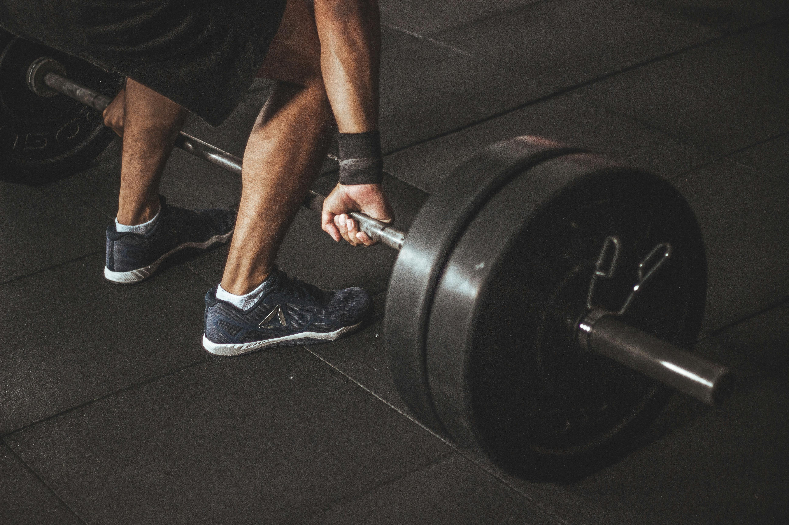

By Alexis Barraza — ICT280 Project 2
I chose nutrition and bodybuilding for this project because fitness has become an important part of my life. I enjoy learning about training, body composition, and how food choices can affect performance and recovery. People like Gregg Doucette and Gabi Tuff have also influenced the way I think about fitness because they talk about discipline, consistency, and being realistic about what it takes to improve.
One thing I have learned is that training hard is only part of the process. Food matters just as much. If you want to perform better, recover better, and stay consistent, I need enough pprotein, enough water, and meals that support my goals.In a way, nutrition is similar to coding or cybersecurity. Small choices repeated over time make a big difference in the final result.
Nutrition is likely to be most people's biggest struggle when it comes to getting in shape. What most people fail to do is understand healthy food versus unhealthy food as to simply controlling the amount of food we eat.
As fitness educator Gregg Doucet emphasizes, the quality of your food choices matters whole foods, lean proteins, complex carbohydrates, and healthy fats provide the micronutrients and fiber your body needs to function and recover. But no single food is inherently bad. Context and quantity are everything.
Gabbi Tuff, a well-known nutrition coach, says the same. Many people obsess over eating clean while completely ignoring total calorie intake. You can eat nothing but salad and still gain weight if you more than you burn. The key is awareness, not perfection.
A calorie is a measurement just like a teaspoon or an inch. Calories are the amount of energy released when your body breaks down (digests and absobrbs) food. The more calorires a food has, the more energy it can provide to your body. When you eat more calories than you need, the body stores the extra calories as fat. Even fat free can have a lot of caloreis. Excess calories in any form can be stored as fat.
To lose weight, we need a calorie deficit. One way we can achieve this by exercising to burn calories, eating less than we expend, or combination of both.
| Goal | Calorie Equation |
|---|---|
| Weight Loss | Calories Consumed < Calories Expended |
| Weight Gain | Calories Consumed > Calories Expended |
| Weight Maintenance | Calories Consumed = Calories Expended |
However, regularly eating fewer calories than your body needs can cause your metabolism to slow down. Several studies show that low-calorie diets can decrease the number of caloreis the body burns by as much as 23%. Regularly eating fewer calories than your body requires can cause fatigue and make it more challenging to meet your daily nutrient needs. This is why moderate, sustainable deficit is almost always better than an extreme one.
The concept of energy balance is based on the fundamental law of thermodynamics, which states that energy cannot be destroyed. Only transferred or converted from one form to another. In the case of weigh loss or gain, the energy can be simplified to Calories In vs. Calories Out
| ^ Energy IN | v Energy OUT |
|---|---|
| Food & Drink Sources | How Your Body Burns Calories |
| Protein - 4 calories per gram | BMR - Basal Metabolic Rate |
| Carbohydrates - 4 calories per gram | NEAT - Non-Exercise Activity Thermogenesis |
| Fats - 9 calories per gram | EA- Exercise Activity |
| Alcohol -7 calories per gram | TEF - Thermic Effect of Food |
| Term | Full Name | What It Means |
|---|---|---|
| BMR | Basal Metabolic Rate | The calories your body burns at complete rest just to keep you alive breathing, heartbeat, organ function. This is typically the largest portion of your total daily burn. |
| NEAT | Non-Exercise Activity Thermogenesis | Calories burned through everyday movement that is not planned exercise walking around, fidgeting, standing, doing household tasks. This can vary a lot between people. |
| EA | Exercise Activity | Calories burned during intentional, structured exercise such as weightlifting, running, or cardio sessions. This is the component we have the most direct control over. |
| TEF | Thermic Effect of Food | The calories your body uses just to digest, absorb, and process food. Protein has the highest TEF at around 20 - 30%, meaning roughly 1 in 4 protein calories is burned just by eating it. |
I am currently in a calorie deficit consuming fewer calories than my body expends each day. The goal is to lose body fat while preserving as much lean muscle as possible, which is why protein is kept high relative to the total calorie target.
Protein
183g
732 cal | 39%
Carbs
177g
708 cal | 38%
Fat
45g
405 cal | 22%
Total Daily Target
1,875 cal/day
| Protein | 39% - 732 cal |
| Carbs | 38% - 708 cal |
| Fat | 22% - 405 cal |
My training combines resistance (bodybuilding) work with structured cardio. Weight training preserves and builds muscle while in a deficit. Cardio increases total daily calorie expenditure and supports cardiovascular health.
| Training Type | Days/Week | Details |
|---|---|---|
| Bodybuilding | 4 | Structured weight training focused on hypertrophy and strength. |
| Steady Cardio | 5 | 30 minutes of steady walking low intensity, ideal for fat burning and recovery. |
| HIIT Cardio | 5 | 15 minutes of high-intensity intervals to spike calorie burn. |
| Food | Why It Works |
|---|---|
| Chicken Breast | Lean, high-protein, easy to meal prep in large batches. |
| Rice | Clean carbohydrate energy to fuel workouts and replenish glycogen. |
| Eggs | Affordable, high in protein and healthy fats, versatile for any meal. |
| Broccoli | High in fiber and micronutrients, adds volume while keeping calories low. |
| Greek Yogurt | High-protein snack with probiotics for gut health and digestion. |
| Oats | Slow-digesting carbs that provide steady energy through the morning. |

This topic represents me because I am trying to improve in more than one area of life. I care about technology and spend a lot of time studying programming and cybersecurity, but I also care about building better habits physically and mentally.
The discipline required to track calories, show up to the gym consistently, and prioritize recovery is the same discipline required to study, debug code, and build projects. Both demand that you trust the process even when results are not visible yet.
A website that helped me set my calories. Calorie Calculator